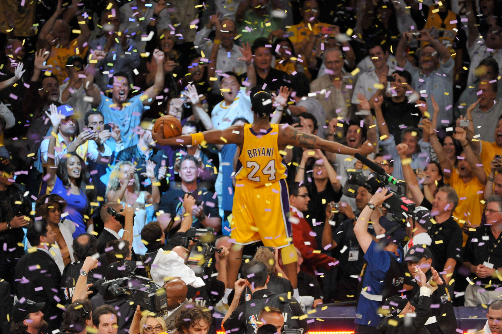

Rest In Peace Kobe Bryant

Source: The Undefeated
I am not Kobe fan honestly but just like him, basketball is something I love. I hope he’s at peace because although his journey in life is over, the legacy he left behind is etched in all our souls.
Rest In Peace Mamba üèÄ